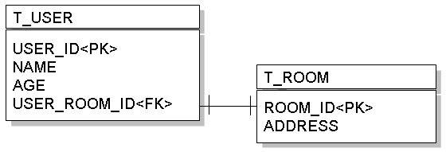
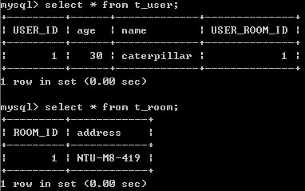

考慮每一個User配給一間Room，形成一對一，T_USER表格透過USER_ROOM_ID作為外鍵參考至T_ROOM的ROOM_ID：

物件方面，可設計User的實例參考至Room實例，而希望儲存User實例時，若有參考至Room實例，Room實例也一併儲存。
您可以如下設計User類別：
- User.java
package onlyfun.caterpillar;
import java.io.Serializable;
import javax.persistence.CascadeType;
import javax.persistence.Column;
import javax.persistence.Entity;
import javax.persistence.GeneratedValue;
import javax.persistence.GenerationType;
import javax.persistence.Id;
import javax.persistence.JoinColumn;
import javax.persistence.OneToOne;
import javax.persistence.Table;
@Entity
@Table(name="T_USER")
public class User implements Serializable {
@Id
@GeneratedValue(strategy = GenerationType.AUTO)
@Column(name="USER_ID")
private Long id;
private String name;
private Long age;
@OneToOne(cascade=CascadeType.ALL)
@JoinColumn(name="USER_ROOM_ID", referencedColumnName="ROOM_ID")
private Room room;
public Long getAge() { return age; }
public void setAge(Long age) { this.age = age; }
public Long getId() { return id; }
public void setId(Long id) { this.id = id; }
public String getName() { return name; }
public void setName(String name) { this.name = name; }
public Room getRoom() { return room; }
public void setRoom(Room room) { this.room = room; }
}從上面可以看到，您使用@OneToOne來標註一對一實體關聯，而cascade設定為CascadeType.ALL，表示儲存User實例時，若有參考至Room實例，Room實例也一併儲存，這個稱之為聯級（Cascade）操作，設定為ALL，表示之後修改、刪除等動作，也會一併更新Room的對應表格資料。
關於Fetch模式的說明，還可以參考 CascadeType 與 FetchType。
@JoinColumn中設定T_USER表格透過USER_ROOM_ID作為外鍵參考至T_ROOM的ROOM_ID。
Room類別的設計可以如下所示：
- Room.java
package onlyfun.caterpillar;
import java.io.Serializable;
import javax.persistence.Column;
import javax.persistence.Entity;
import javax.persistence.GeneratedValue;
import javax.persistence.GenerationType;
import javax.persistence.Id;
import javax.persistence.Table;
@Entity
@Table(name="T_ROOM")
public class Room implements Serializable {
@Id
@GeneratedValue(strategy = GenerationType.AUTO)
@Column(name="ROOM_ID")
private Long id;
private String address;
public String getAddress() { return address; }
public void setAddress(String address) { this.address = address; }
public Long getId() { return id; }
public void setId(Long id) { this.id = id; }
}一個儲存的例子如下所示，由於設定了聯級操作為ALL，所以只要儲存User，所參考的Room也會一併儲存：
Room room = new Room();
room.setAddress("NTU-M8-419");
User user = new User();
user.setName("caterpillar");
user.setAge(new Long(30));
user.setRoom(room);
EntityManager entityManager =
JPAUtil.getEntityManagerFactory().createEntityManager();
EntityTransaction etx = entityManager.getTransaction();
etx.begin();
entityManager.persist(user);
etx.commit();
entityManager.close();
儲存時會先儲存Room的資料，取得ROOM_ID之後，再儲存User的資料，例如以Hibernate作為JPA的實作，會產生以下的SQL語句：
Hibernate:
insert
into
T_ROOM
(address)
values
(?)
Hibernate:
insert
into
T_USER
(age, name, USER_ROOM_ID)
values
(?, ?, ?)
insert
into
T_ROOM
(address)
values
(?)
Hibernate:
insert
into
T_USER
(age, name, USER_ROOM_ID)
values
(?, ?, ?)
一個儲存時的資料表內容範例如下：

而查詢時，會使用LEFT OUTER JOIN的方式結合表格進行查詢，例如以下的陳述：
User user = entityManager.find(User.class, new Long(1));
以Hibernate作為JPA的實作，會產生以下的SQL語句：
Hibernate:
select
user0_.USER_ID as USER1_0_1_,
user0_.age as age0_1_,
user0_.name as name0_1_,
user0_.USER_ROOM_ID as USER4_0_1_,
room1_.ROOM_ID as ROOM1_1_0_,
room1_.address as address1_0_
from
T_USER user0_
left outer join
T_ROOM room1_
on user0_.USER_ROOM_ID=room1_.ROOM_ID
where
user0_.USER_ID=?
select
user0_.USER_ID as USER1_0_1_,
user0_.age as age0_1_,
user0_.name as name0_1_,
user0_.USER_ROOM_ID as USER4_0_1_,
room1_.ROOM_ID as ROOM1_1_0_,
room1_.address as address1_0_
from
T_USER user0_
left outer join
T_ROOM room1_
on user0_.USER_ROOM_ID=room1_.ROOM_ID
where
user0_.USER_ID=?